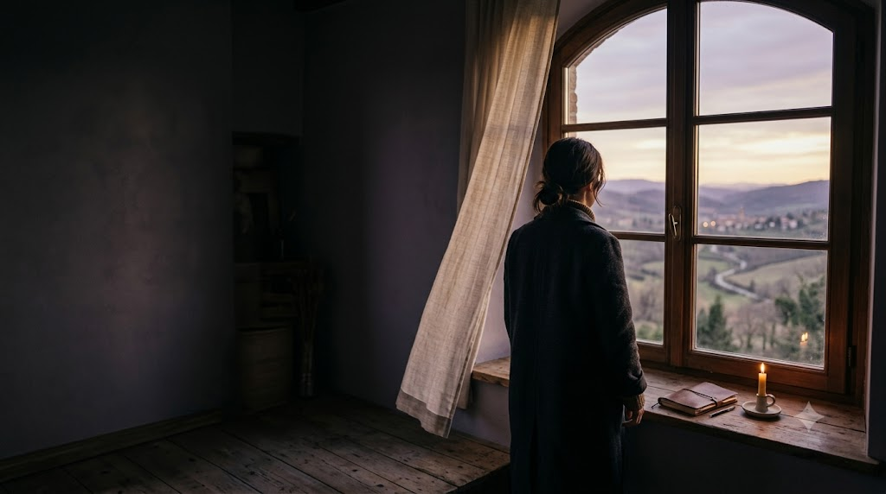

Chapter One — Color
If Sofie were a color…
Violet.
Not just because it's your favorite color.
Something calm enough to feel peaceful, but deep enough to make you stop and look.
a small thing for
10 little ways of describing someone unforgettable.
Chapter One — Color
Violet.
Not just because it's your favorite color.
Something calm enough to feel peaceful, but deep enough to make you stop and look.
Chapter Two — Superpower
Making people believe they can do better.
Not super strength. Not invisibility.
Somehow… just making people want to improve.
Chapter Three — Art Form
Everything at once.
Drawing. Singing. Writing. Cooking. Speaking.
Creative wasn't a hobby. It was basically an operating system.
Chapter Four — Book
The kind you keep returning to.
Because every time you come back, you notice something you missed before.
Chapter Five — Verse
"Let your light shine…"
Matthew 5:16
It reminded me of you.
Chapter Six — Place
Somewhere peaceful.
A place where you can slow down, breathe, and remember what actually matters.
Chapter Seven — Prayer
A simple prayer that God keeps you happy, strong, peaceful, and surrounded by good people.
Amen.

Chapter Eight — Character
The quiet main character.
Not the one trying to be noticed. Somehow, still the one people remember.
Kind.Creative.Brave.Faithful.Unforgettable.
Chapter Nine — Song
Something powerful.
Something meaningful.
Something that makes you want to become better.
— the kind of feeling only "Kings of Kings" gives
If I had to describe what meeting you became…
I'd simply say…
I'm glad I met you.
May God keep guiding you, protecting you, and giving you more reasons to smile.
— end of the little story 🤍
Chapters